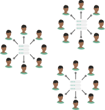

The use of digital technologies to aid the identification of individuals, the subsequent authentication of their identity, and to allow authorisation on their behalf is a common practice in emerging national ID schemes. We describe principles for the appropriate use of digital technologies in ID systems, common technical architectures that have emerged in their design, and summarise some of the key characteristics of these digital technologies.
Appropriate Use of Technology
Information Architecture
